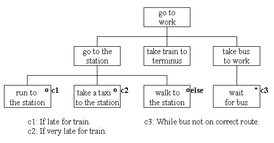

JSP sequence, selection and
iteration
These are fundamental to all JSP usage and are
assumed to be well understood.

The component go to work is a sequence
of go to the station followed by take train to terminus
and take bus to work.
The component go to the station
is a selection between run to the station
or take a taxi to the station or
walk to the station depending upon the conditions
shown.
The component take bus to work
is an iteration of wait for bus which
finishes when a bus on the correct route arrives.